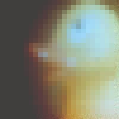

|
 |
#ここのページでは20世紀を振りかえったり、21世紀の目標を立てたりしません。 でも、あけましておめでとうございます。 |
| 2000.12 / 2001.2 |
-2001.1.22
#会社の人にMiles Davis/On The Cornerを借りました。
今まできちんとしたジャズ聴かなかった事をちょっと悔いました。
そろそろ生まれ出でて四半世紀経とうとしてるのにこんな音楽の存在知らなかったなんてねぇ.....少しは音楽聴いてるようなフリしてて、恥ずかしく思いましたよ。
いやでもほんと何これ？何でこんなにかっこいいの？DCPRGの方法ってココらへんにあるらしいってのはなんとなく聞いてたんですけど....聴いてみたら1曲目、そのまんま。
DCPRGのライヴ見たこと有って、なおかつコレ聴いたこと無い人(俺のような人)いたらすぐ買いに行きましょう。というかレンタルでも良いです、聴きましょう。
-2001.1.21
#いつのまに再発されたんでしょう？アンファン2。平沢進に矢口博康に鈴木さえ子にNav KatzeにOriginal Loveに今堀恒雄。俺の為に有るようなメンツのオムニバスです。あとジャケ買い、Incredible String Band/The 5000 Sprits。予想通りのサイケでフラワーでトラッドなCDでした、目が宙を泳いでそう。
ちなみに、あんまりこだわってないんですけど20,000のキリ番見たら書き込みかメール欲しいなぁ～なんて、言ってみたりして。夜露死苦。
-2001.1.20
#先週の水曜から三日連続で会社で日付が変わるのを見ました、最近体力無くなってるみたいです、消耗しました。
昼過ぎに起きたら雪が降ってました、ROVOのライヴを見に行こうと思って一生懸命駅まで行ったらなんだか更に降ってきて、「あーもーどうしようかな？」とか思って電車に乗って気づいたら谷保に付いてました。てなわけでDOMBAのライヴ見てきました。
あと、サボっていたリンクを追加、無断リンクも追加。
いやでもほんとに最近体力無い....というか人間として何かエネルギーに欠けているような気が.....がんばれ俺。
-2001.1.15
#えぇぇと友達の家で椎名林檎のDVDを見ました、「ご起立シャボン」ってヤツだっけな？面白かった、DVD買おうかな？いやプレステ２かな？
ちなみに明日からちょっと出張で富山行ってきます、ハラミドリのライヴは見に行けそうにないや、片道5時間。
-2001.1.13
#土曜なので仕事。
しかも結構遅くまでやっててムカ入ったのでCD買いに行っちゃいました。A.P.J./Acoustic Progressive Jazzなんて買いました。プログレですよ、プログレ、難波弘之。
ちょっと前から気になってたRINGLINKS/kobune、こーゆーの聴くとやっぱ落ち着きます、駒沢裕城さんのスチールギターがきもちいい。
Egberto Gismonti/Trem Caipira.......ちょっとイマイチかも。
ちなみに新しいラーメン屋へ行って家に帰る途中に「極真カラテ 元住吉道場」ってのを見つけちゃいました、浸蝕されてますね。
-2001.1.10
#ひじきを煮てたりしてました、美味しいです。主夫いけます、俺。
こないだ買った山下洋輔/PLAYGROUNDに結構ハマってます。たまにはまっとうなCD買ってみるものですね。
-2001.1.8
#友達のライヴを見に高円寺へ、なんだか飯食って外でたら雪雪雪でした。雪雪。
ちょっと時間が余ったのでCD屋へ行って、オムニバスの私服刑事ってヤツを買ってきました。DCPRGの音源かっちょよかったです。
あとついでにmutantes/a divina comedia ouとJune 1,1974を。本当はジスモンチ捜してたんですけど。
-2001.1.7
#えーとSTUDIO VOICEがJAPANESE COMPOSER特集で買ってみました、野澤美香さん(原マスミさんの3枚目に参加してたピアノの人、現代音楽な人みたい)のCDなんて有るのを知って早速タワーレコードに買いに行ったのに....影も形も無しでした。誰かどこかで売ってるの見かけたら教えて下さい、「野澤美香/Silent Garden」ってヤツ。
あーしかしなんでこの雑誌のライターの文ってわかりにくいんだろう(全部が全部じゃないけど)、コンサバティヴって何？アイデンティティ・クライシスって？イクスキューズ？リプリゼンテイション？？
STUDIO VOICE的にはこんな文スラスラ読めなきゃ駄目なのかな？ ...無理、うざったい。
-2001.1.5
#浅間山では-13度で鼻の中も凍ります。まつげが凍ってラメ入ったみたいになってました。凄い寒かったです、ほんと。
-2001.1.3
#正月ってーのはなかなかヒマなもんで。
クラムボン/まちわび まちさび を弟に借りて聞きました。人気出るのも当たり前みたい、良すぎです。邦楽のヒットチャートもこんな人達がどんどん出てくるよーになれば、ちょっとはTVとか見てみたい気にもなるのに。
明日からちょっとスノボに行ってきます、じゃ。
-2001.1.2
#ウロウロ元旦とダラダラ2日という年明けです。
30日にウズマキマズウのライヴを見てから、ほとんど家に帰りませんでした。パワプロと初日の出と酔っ払いと初詣とビョークの映画の年始。
大井埠頭なんかで日の出なんか見てたらちょっとハイになってきちゃって、そのまんま折り畳み自転車買って映画見に行ってました。雲が焼けていくのをじーっとずーっと眺めてるのも、世の中そんなに不満なんて無いよな？とか思ってました。
そんな寝不足で行った「Daner In The Dark」は思いっきり酔いました、ビョークはなんだかとても可愛かったのですが、映画館出てしばらく頭クラクラしてました。映画の中身も新年早々ヘヴィなもの。
そんなで現在掃除と洗濯、部屋の中はまだ世紀末っぽいです。BGMは去年最後の最後に買ったTin Pan -もっともっとポップなのかと思ってました、枯れることないおっさん達の気合勝ちかな、このCDは。
-2001.1.1
#明けました。ことしもよろしくお願いします。